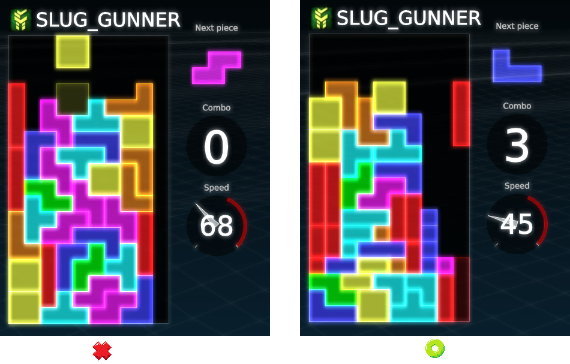
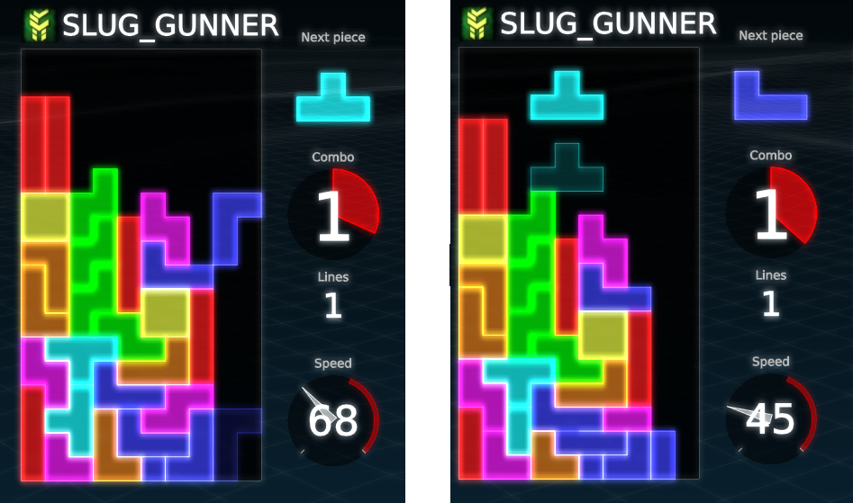
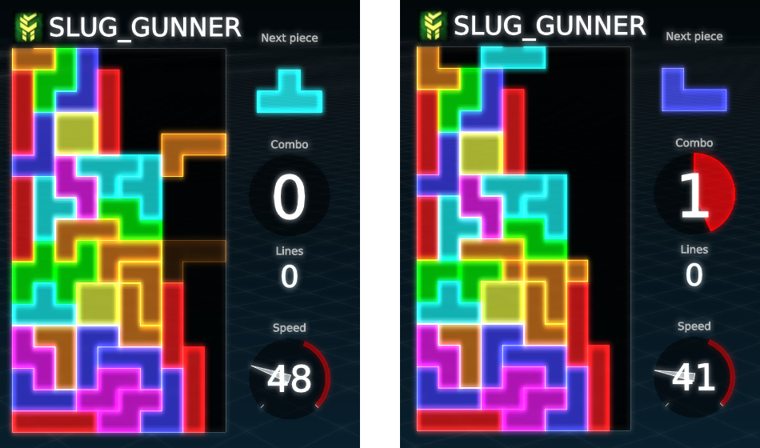
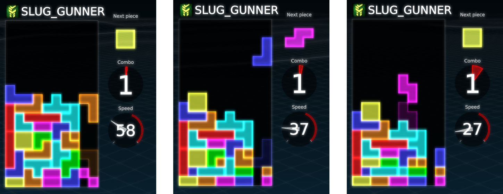

Intro
There aren't many guides for Cultris 2. As its name implies, it is a Tetris-like cult game. (Cult + Tetris = Cultris. Genious, I know..)
This guide will teach you how some important techniques that go into up-stacking, and are also useful in other Tetris variant games. However, since Cultris 2 has the absence of hold - and only one piece preview - this information suddenly becomes more valuable.
Cultris 2 Mechanics
First, it is important to note that Cultris games do not follow the same versus rules as other Tetris games. This is the particular reason why the Cultris games stand out among the rest of the Tetris clones. Consider the following:
ComboTimer = time you have to combo (in seconds)
ComboCounter = combo strength (1 = weak combo, 10 = strong combo)
The way you attack and defend is by making combos. The combo timer begins ticking the first line you clear when your
timer is at zero seconds. If your timer is not at zero seconds, then your combo counter goes up. Clearing more lines at
once grants you more time to combo.
Harddrop wiki explains this part well enough:
Base(comboTimer) + NumberOfLinesCleared * Bonus(comboCounter)
| initial garbage lines per combo | ||||||||||||||
|---|---|---|---|---|---|---|---|---|---|---|---|---|---|---|
| counter | 1 | 2 | 3 | 4 | 5 | 6 | 7 | 8 | 9 | 10 | 11 | 12 | 13 | 14 |
| lines sent | 0 | 1 | 1 | 1 | 2 | 2 | 3 | 5 | 7 | 9 | 11 | 11 | 11 | 11 |
| total sent | 0 | 1 | 2 | 3 | 5 | 7 | 10 | 15 | 22 | 31 | 42 | 53 | 64 | 75 |
| total/counter | 0.00 | 0.50 | 0.67 | 0.75 | 1.00 | 1.17 | 1.43 | 1.88 | 2.44 | 3.10 | 3.82 | 4.42 | 4.92 | 5.36 |
| combo-time expansion | ||||||||||||||
| base time | 2.4 | 1.1 | 0.4 | 0.05 | ? | ? | ? | ? | ? | ? | ? | ? | ? | ? |
| bonus time | 1.2 | 0.6 | 0.3 | 0.2 | ? | ? | ? | ? | ? | ? | ? | ? | ? | ? |
Combo-time example:
If you start a combo with a Single (counter=1), then you begin with 2.4 + 1 * 1.2 = 3.6 seconds combo-time.
If you start a combo with a Tetris (counter=1), then you begin with 2.4 + 4 * 1.2 = 7.2 seconds combo-time.
If this is followed up by a Single (counter=2), then you gain 1.1 + 1 * 0.6 = 1.7 seconds additional combo-time.
If this is followed up by a Tetris (counter=2), then you gain 1.1 + 4 * 0.6 = 3.5 seconds additional combo-time.
If you start with a Single followed by a Tetris, then you are rewarded with 3.6 + 3.5 = 7.1 seconds combo-time.
If you start with a Tetris followed by a Single, then you are rewarded with 7.2 + 1.7 = 8.9 seconds combo-time.
In both examples 5 lines were cleared, but the rewarded time is different.
Try to start a combo with a multi-line clear, but avoid them in the later course of a combo.
How to stack safely
As mentioned before, in Cultris games you cannot hold and you only get 1 piece preview. Consider these stacks:

The reason why the stack on the left is a bad stack is because it doesn't allow for easy down-stacking and there isn't much
combo potential. The stack on the right however, allows for any piece to be used to clear lines. A good player can raise
their combo counter higher than 10 with the stack on the right.
Stacking tips
So you stacked 2-wide (2 columns left open) and now you want to setup your Tetris. Here's how you can do it:

This works with J-piece, L-piece, and T-piece.
Now you want to fix your 3rd column. There's a method for that too!

This strategy works with the J-piece and L-piece, but it is not as effective with the T-piece, as the T-piece will increase your
2nd column height by 1 and will leave you an overhang.
There will be times where you get an onslaught of s-pieces or z-pieces and you will have no choice but to
drop it in your well. This will result in your stack looking like this:

TA-DAA!! Now you have a Tetris setup!
Closing comments
I hope this guide was of some use to some people. Up-stacking can be pretty difficult in Cultris 2 given the absence of hold and being limited to one piece preview. This is it for now, but make sure to check out Harddrop's in-depth guide on Cultris 2. It goes into detail with the piece randomizer, twists, and much more!